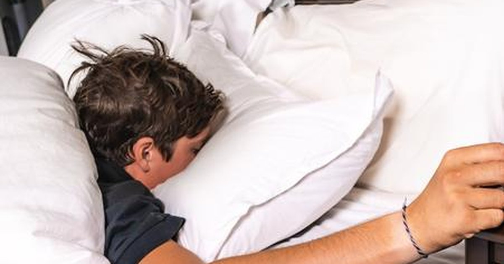

I used to think waking up thirsty meant I hadn’t drunk enough water the night before. So I would chug a big glass before bed. Then I’d wake up at 2 AM to pee, fall back asleep, and wake up thirsty again anyway. It felt like I couldn’t win. Then I learned the science of overnight fluid loss, and everything made sense. You lose water while you sleep. Not because you’re sweating buckets or because your room is too hot. You lose it through breathing. Every time you exhale, you release humidified air. That moisture comes from your body. Over eight hours, that adds up to about 500 to 800 milliliters (17 to 27 ounces) of water. That’s almost a full bottle of water, just gone into the air. This is called insensible water loss. You can’t feel it. You can’t control it. It happens whether you’re asleep or awake, but it’s especially significant during sleep because you’re not drinking for hours. Your body also loses a small amount through your skin, even without sweating. That’s another 100‑200 milliliters (3‑7 ounces) overnight. So by the time you open your eyes, you’re already running a deficit. That deficit isn’t huge — about 1% of body weight for a 70‑kilogram person. But that 1% is enough to affect your mood, your cognition, and your energy levels. Studies show that even 1% dehydration impairs attention, memory, and motor skills. You wake up groggy not just because you’re tired, but because your brain is slightly dehydrated. The hormone behind this is vasopressin, also called antidiuretic hormone. During the day, vasopressin levels fluctuate based on your fluid intake. When you’re well hydrated, vasopressin is low, and your kidneys produce dilute urine. When you’re dehydrated, vasopressin rises, and your kidneys hold onto water. At night, vasopressin naturally increases to help you sleep through without needing to pee. That’s why you don’t wake up every hour. But that same hormone also means your body is conserving water, not producing new water. The water you lose through breathing and skin doesn’t get replaced until you drink in the morning. That’s why morning thirst is so reliable. Your body is sending a clear signal: “I’ve been losing water for eight hours, and I need you to fix it.” The problem is that many people ignore that signal. They reach for coffee instead. Coffee has a BHI of 0.98, so it’s almost as hydrating as water. But it also contains caffeine, which is a mild diuretic and can increase urine output. If you drink coffee on an empty stomach while already dehydrated, you might feel jittery or have to pee sooner. The net effect is still positive — you retain most of the fluid — but you’re not addressing the deficit as efficiently as you could with plain water. “The baseline,” as I call it, is plain water. It has no calories, no caffeine, no additives. It absorbs quickly and goes straight to work rehydrating your tissues. That’s why my first rule of morning hydration is: 500 milliliters (17 ounces) of water within ten minutes of waking. Before coffee. Before breakfast. Before checking your phone. Just water. The science backs this up. A study from the University of California found that drinking 500 mL of water upon waking increased metabolic rate by 24% for one hour. Another study showed that morning hydration improved reaction time and subjective alertness within 20 minutes. That’s faster than coffee. I tested this on myself for a month. One week, I drank coffee first. The next week, I drank 500 mL of water first, waited 20 minutes, then coffee. The water‑first weeks, I felt clearer, less anxious, and my morning headaches disappeared. The coffee‑first weeks, I felt more jittery and had an energy crash by 10 AM. I’m not saying coffee is bad. I’m saying order matters. My client Jenna, the teacher from earlier articles, used to wake up with a dull headache every day. She thought it was stress or poor sleep. I asked her to try 500 mL of water before her morning coffee. Her headache disappeared within three days. She said, “I can’t believe I went years with that headache.” She now keeps a water bottle on her nightstand and drinks it before she even sits up. Another client, a truck driver named Ray, was having trouble staying alert on long drives. He drank coffee all morning. His urine was dark yellow. We added 500 mL of water first thing, and he started pulling over less often to pee because his body was actually holding onto the fluid instead of flushing out caffeine. His dispatcher said he seemed more focused. The morning deficit is even larger for people who sleep in warm rooms, who breathe through their mouth, or who have sleep apnea. Mouth breathing accelerates water loss. If you wake up with a dry mouth and a scratchy throat, that’s a sign you’re losing more fluid than average. Those people need more than 500 mL. Some need 750‑1,000 mL. Altitude also increases overnight loss. At 2,500 meters (8,200 feet), you lose about 50% more water through respiration because the air is drier and you breathe faster. If you’re skiing or hiking in the mountains, your morning deficit can be 1 liter (34 ounces) or more. I’ve seen skiers who wake up with headaches and assume it’s altitude sickness. Sometimes it’s just dehydration. The solution is the same. Water by the bed. Drink it before you do anything else. I also recommend adding a pinch of salt to your morning water if you’re a salty sweater or if you exercised hard the day before. Overnight, you’ve lost not just water but also a small amount of sodium. A pinch of salt (about 200‑300 mg of sodium) helps your body retain that morning water and rebalance your electrolytes. I have a client named Dave — the salty sweater from earlier — who now adds a quarter teaspoon of salt to his morning bottle. He said it tastes terrible but his morning energy is much better. I told him he could use an electrolyte tablet instead. He said the salt is cheaper. The other factor in morning dehydration is your evening routine. If you drink alcohol before bed, you suppress vasopressin and increase overnight urine output. That’s why you wake up thirsty and have dark urine after drinking. The fix isn’t to drink more water before bed — that will just make you wake up to pee. The fix is to drink less alcohol, or to drink a glass of water for every alcoholic drink during the evening, finishing at least an hour before bed. I’m not a teetotaler. I have a glass of wine sometimes. But I know that if I drink, I need to drink an extra 500 mL of water before sleep, and I’ll still wake up thirstier than usual. That’s the cost. The science of morning dehydration also explains why some people feel better when they do a morning hydration challenge. Your body is starting from a deficit. Filling that deficit early gives you a head start on the day. If you wait until noon to drink your first water, you’ve been dehydrated for hours. Your brain has been working at a disadvantage. I’ve seen studies where students who drank 500 mL of water before an exam scored higher than those who didn’t. Not because water is smart, but because dehydration impairs cognitive function. Reversing the deficit improved their processing speed and memory. The practical takeaway is simple. Keep a bottle by your bed. Drink it when you wake up. Then go about your morning. If you want coffee, have it after 20 minutes. That’s it. I built a tool to help track this habit.Hydration Goal Setter
Track your morning 500 mL streak. The app reminds you to drink before coffee.
All data stays in your browser — we never see it.
Daily Water Intake Calculator
Set your baseline, then subtract 500 mL for the morning. The rest is easy.
All data stays in your browser — we never see it.
Exercise Sweat Loss Estimator
If you run or train in the morning, add your sweat loss to the morning deficit calculation.
All data stays in your browser — we never see it.